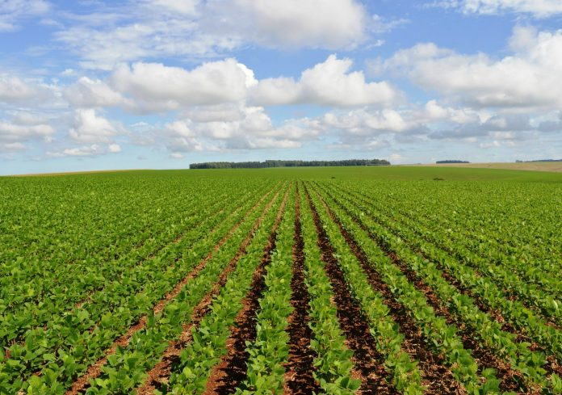
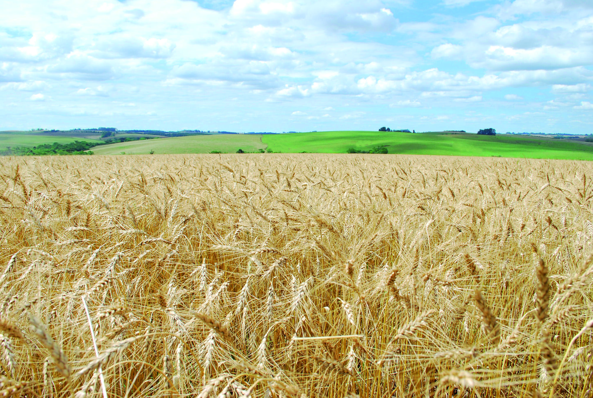
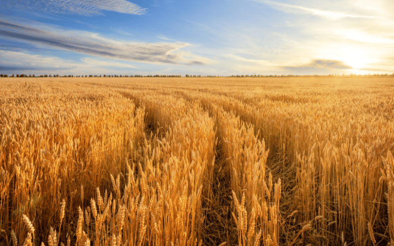

Soja
A soja (Glycine max) é uma das oleaginosas mais importantes do mundo, destacando-se como uma das principais commodities agrícolas devido ao seu alto teor de proteína e óleo. Ela é amplamente utilizada na alimentação animal (farelo), na nutrição humana e na produção de biocombustíveis (biodiesel).
Alimentação Animal: Cerca de 75% da soja global é transformada em farelo para ração de aves, suínos e bovinos. Óleo de Cozinha: Utilizado no dia a dia para cozinhar e na indústria de alimentos processados. Biodiesel: Importante matéria-prima para a matriz energética renovável. Consumo Humano: Base para alimentos como tofu, leite de soja, shoyu (molho de soja) e proteína texturizada. Saúde: Contém isoflavonas, compostos que auxiliam na redução dos sintomas da menopausa e na saúde óssea.

Trigo
O trigo (Triticum aestivum) é um dos cereais mais importantes do mundo, sendo utilizado principalmente na produção de farinha e de diversos alimentos. Ele possui grande importância na agricultura e na alimentação humana.
Alimentação Humana: O trigo é utilizado na produção de pães, massas, bolos, biscoitos e outros alimentos. Farinha: A farinha de trigo é um dos principais produtos obtidos a partir do grão. Alimentação Animal: O trigo e seus derivados também podem ser utilizados na alimentação de animais. Economia: A produção de trigo possui grande importância econômica para diversos países e agricultores.


Contato
Preencha os campos abaixo para entrar em contato.